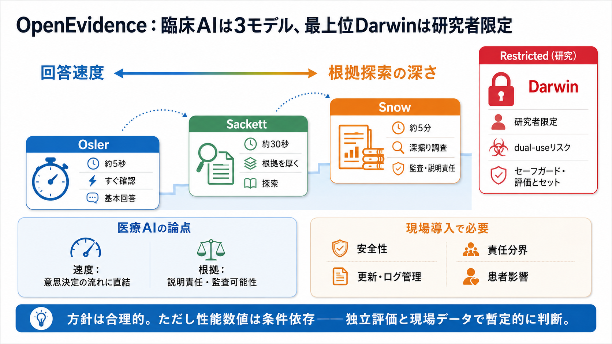

OpenEvidence Launches Medical AI Model Family With Darwin Preview
In a companion technical post, OpenEvidence detailed the evaluation setup. For MedQA, the company started from physician…

In a companion technical post, OpenEvidence detailed the evaluation setup. For MedQA, the company started from physician…
OpenEvidence Darwin is the most advanced medical AI model in the world, now in research preview. It is the first AI mode…
On June 23, 2026, Nature Medicine published a head-to-head benchmarking study comparing general-purpose large language m…
Category strengths: Purpose-built for clinical workflows. Authoritative source grounding (peer-reviewed literature, clin…
We view this recognition not as a finish line, but as independent validation of the approach we have invested in from th…